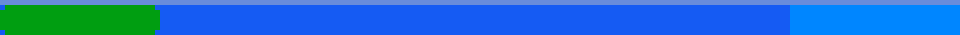

<div class="desktop d-flex d-justify-content-center">
  
  
</div>

<app-folder
  nom="CV"
  top="5%"
  type="text"
  (click)="toogleWindow('cv')"
></app-folder>
<app-folder nom="GitHub" top="22%" type="GitHub"></app-folder>
<app-folder nom="Mes travaux" top="39%" type="folder"></app-folder>
<app-folder nom="Mon jeu" top="5%" left="10%" type="folder"></app-folder>
<app-folder nom="Contact" top="5%" type="text" left="85%"></app-folder>

<app-window *ngIf="windowToogled" [nom]="nom"></app-window>
